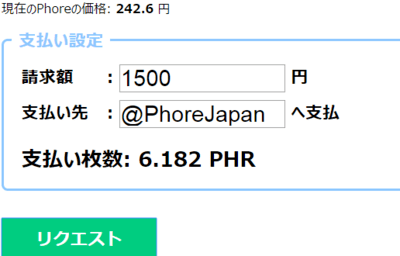
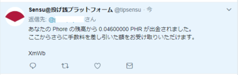
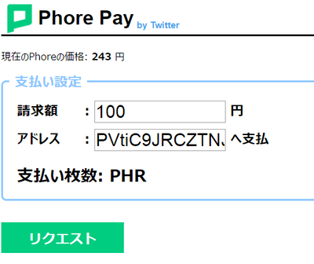
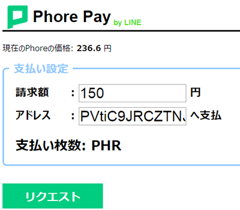
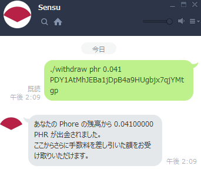

Phore Pay
購入者用ガイド
0. Phore Payとは？
Phore PayとはSensuを用いたTwitter/LINEでの支払い支援サービスです。
必要なもの
- Twitterの公式アプリがインストールされていること
- LINEがインストールされていること
のどちらかが満たされていれば 送金が可能です。
a. ウェブサイトからSensuへ登録
Sensu利用規約をお読みの上、同意できる方は
こちらよりアカウントを作成しましょう。入力が完了したら、作成ボタンをクリックしましょう。作成が完了したら、次の画像のようにログインが完了するはずです。

もし出来ていなければ、画面上部にあるメニューよりログインを選択してください。
b. Twitter/LINEとSensuで連携
ログインが完了したら、画面上部のメニューよりIDになっている部分をクリックしましょう。
すると、上のような画面になるはずです。
ここから、連携タブをクリックし、認証コードボタンをクリックしましょう。

の認証コードをコピーしましょう。
Twitterの場合
@tipsensuより、Twitter上で@tipsensuへダイレクトメールを次のような文面で送信しましょう。
link 認証コード
送信後、次のような返事が返ってきます。

Twitterとの連携が出来ました。次にLINEとの連携を行いましょう。
LINEの場合
このリンクよりSensuのLINE@を友達登録しましょう。
友達登録が完了したら、同じ手順で認証コードを発行し、次の文面を送信してください。
./link 認証コード
送信後、次のような返事が返ってきます。

LINEとも連携が完了しました。
Discordは、LINEと同じ方法で認証が出来ます。
こちらよりPhore日本のDiscordにご加入いただき、
Sensuを探してください。Sensuを見つけたら、直接メッセージで
./link 認証コード
を送信することで認証が可能です。
c. 残高を確認してみよう
認証が完了したら、実際に残高を確認してみましょう。
Twitterでは
@tipsensu balance phr
LINEでは
./balance phr
と送信することで、Phoreの残高を確認できます。
一番上へ
2. Twitterアカウント名へ支払
右上の緑色の三本線メニューを開き、Twitter > アカウント送金へ移動しましょう。請求額(日本円), 支払い先(Twitterのアカウント名@から)を入力しましょう(図例)。

リクエストボタンをクリックすると青いTwitterで支払うボタンとQRコードが出力されます。
- 利用者がページを開いている場合
"Twitterで支払う"ボタンを押しツイート
- 店舗がページを開いている場合
提示されるQRを読み込みツイート
ツイートが完了すると、次のような返信が届きます。

これを店舗の方に見せて、支払いは完了となります。
一番上へ
3. Twitterを使ってアドレスへ送金
右上の緑色の三本線メニューを開き、Twitter > アドレス送金へ移動しましょう。
支払い設定の枠内の、請求額(日本円), 支払い先(Pから始まるPhoreアドレス)を入力しましょう(図例)。

リクエストボタンをクリックすると、青いTwitterで支払うボタンとQRコードが出力されます。
- 利用者がページを開いている場合
"Twitterで支払う"ボタンを押しツイート
- 店舗がページを開いている場合
提示されるQRを読み込みツイート
ツイートが完了すると、次のような返信が届きます。
これを店舗の方に見せて、支払いは完了となります。
一番上へ
4. LINEを使ってアドレスへ送金
右上の緑色の三本線メニューを開き、LINE へ移動しましょう。支払い設定の枠内の、請求額(日本円), 支払い先(Pから始まるPhoreアドレス)を入力しましょう。

リクエストボタンをクリックすると、緑色のLINEで支払うボタンとQRコードが出力されます。
- 利用者がページを開いている場合
"LINEで支払う"ボタンを押し送信
- 店舗がページを開いている場合
提示されるQRを読み込み送信

これを店舗の方に見せて、支払いは完了となります。
一番上へ
FAQ
Q. Sensuから返事が返ってこない
A. よりSensuが停止中か、稼働中かご確認ください。
一番上へ